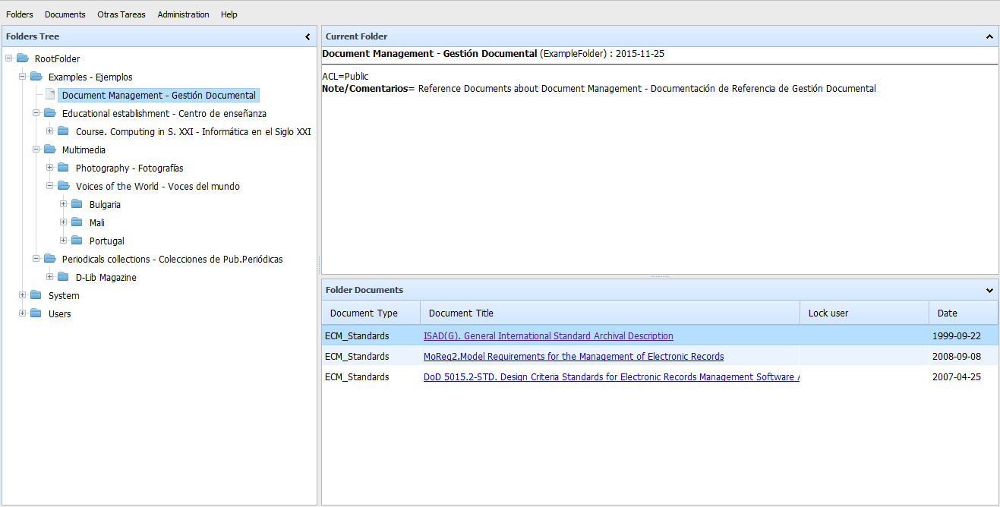

OpenProdoc
 OpenProdoc: Document Management System Castellano
OpenProdoc: Document Management System Castellano 
OpenProdoc 2.0
Openprodoc is a Document Management System, that is, a program for managing documents and share them between users that contain the documents as well as a description of each document, all this grouped in folder/cases and with a security layer so each user acces to the allowed documents.
It's free to use and it's Open Source, so you can review the source code and even improve it or adapt to your requirements.
OpenProdoc has a portable version that can be used in any computer (Linux, Windows, Mac) without installation and with all the functionality.
Beside the document functionality, OpenProdoc includes the managing of multilanguage thesauri and controlled dictionaries that can be used isolated or combined with the document definitions.
New functionality in version 2.0 (March 2017)
The version 1.2 adds, to the existing functionality, important improvements:
- Full text search in the metadata and the content of the documents in most of the office formats (.doc, .xls. .pdf, .ppt, .odp,..)
- Creation of reports and posibility to export the metadata in personalized templates defined by the user inf formats XML, HTML, CSV y TXT
- Support of format RIS for bibliographic references
